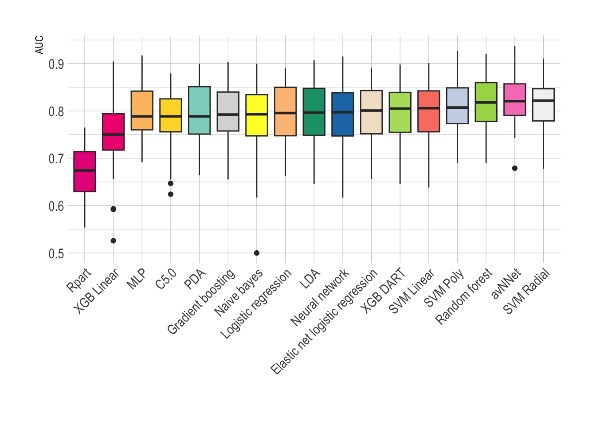

ble.tr <- readRDS("TrainingsSet.RDS")2 Model screening
2.1 Introduction
In this chapter the model screening procedures are described. Six-teen different models were screened. The five best performing models were further tuned. When models with similar architecture were in the top 5, only the best performing model was selected for further tuning.
2.2 Data loading
The trainings data is loaded for feature importance calculation.
Loading required libraries:
library(caret) # Model training
library(ggplot2) # Visualization
library(DT) # Data tables
library(doParallel) # Parallelization
library(dplyr) # Data manipulation
library(tidyverse) # Data manipulation
library(hrbrthemes) # Theme for ggplot
library(RColorBrewer)2.3 Model screening
A five-fold ten times repeated cross-validation was performed for each model. The semi-proper scoring rule ROC-AUC was chosen as the scoring rule.
traincontrol3 <-trainControl(method = "repeatedcv", number = 10, repeats = 5, allowParallel = TRUE,
summaryFunction = twoClassSummary, selectionFunction = "best", classProbs = TRUE)All models were preprocessed using bagged-tree based imputation, centering, scaling and a Yeo-Johnson transformation.
2.3.1 Logistic regression based models
cls = makeCluster(5)
registerDoParallel(cls)
set.seed(1033)
mrf.log <- train(mbd ~ PFA_EPI + surgery.simp + menorrhagia.simp + postpartum.simp + minorwound.simp + epistaxis.simp + tooth.simp + oralcavity.simp+ aPTT+ cutaeous.simp,
data = ble.tr, trControl = traincontrol3, method = "glm", family = "binomial", preProc =c("bagImpute","center","scale", "YeoJohnson")
, metric = "ROC", na.action = na.pass)
stopCluster(cls)
cls = makeCluster(5)
registerDoParallel(cls)
set.seed(1033)
mrf.enlog<- train(mbd ~ PFA_EPI + surgery.simp + menorrhagia.simp + postpartum.simp + minorwound.simp + epistaxis.simp + tooth.simp + oralcavity.simp+ aPTT+ cutaeous.simp,
data = ble.tr, trControl = traincontrol3, method = "glmnet", preProc =c("bagImpute","center","scale", "YeoJohnson")
, metric = "ROC", na.action = na.pass)
stopCluster(cls)2.3.2 Tree based models
cls = makeCluster(5)
registerDoParallel(cls)
set.seed(1033)
mrf.rpart <- train(mbd ~ PFA_EPI + surgery.simp + menorrhagia.simp + postpartum.simp + minorwound.simp + epistaxis.simp + tooth.simp + oralcavity.simp+ aPTT+ cutaeous.simp,
data = ble.tr, trControl = traincontrol3, method = "rpart", preProc =c("bagImpute","center","scale", "YeoJohnson")
, metric = "ROC", na.action = na.pass)
stopCluster(cls)
cls = makeCluster(5)
registerDoParallel(cls)
set.seed(1033)
mrf.rf <- train(mbd ~ PFA_EPI + surgery.simp + menorrhagia.simp + postpartum.simp + minorwound.simp + epistaxis.simp + tooth.simp + oralcavity.simp+ aPTT+ cutaeous.simp,
data = ble.tr, trControl = traincontrol3, method = "rf", preProc =c("bagImpute","center","scale", "YeoJohnson")
, metric = "ROC", na.action = na.pass)
stopCluster(cls)
cls = makeCluster(5)
registerDoParallel(cls)
set.seed(1033)
mrf.gbm <- train(mbd ~PFA_EPI + surgery.simp + minorwound.simp + menorrhagia.simp + epistaxis.simp + tooth.simp + aPTT+ cutaeous.simp +sex,
trControl = traincontrol3,
metric = "ROC", data = ble.tr, method = "gbm",
preProc = c("bagImpute","center","scale", "YeoJohnson"), verbose = FALSE, na.action = na.pass)
stopCluster(cls)
cls = makeCluster(5)
registerDoParallel(cls)
set.seed(1033)
mrf.c5 <- train(mbd ~PFA_EPI + surgery.simp + minorwound.simp + menorrhagia.simp + epistaxis.simp + tooth.simp + aPTT+ cutaeous.simp +sex,
trControl = traincontrol3,
metric = "ROC", data = ble.tr, method = "C5.0",
preProc = c("bagImpute","center","scale", "YeoJohnson"), verbose = FALSE, na.action = na.pass)
stopCluster(cls)2.3.3 SVM based models
# SVM
cls = makeCluster(5)
registerDoParallel(cls)
set.seed(1033)
mrf.svmlin <- train(mbd ~ PFA_EPI + surgery.simp + menorrhagia.simp + postpartum.simp + minorwound.simp + epistaxis.simp + tooth.simp + oralcavity.simp+ aPTT+ cutaeous.simp,
data = ble.tr, trControl = traincontrol3, method = "svmLinear", preProc =c("bagImpute","center","scale", "YeoJohnson")
, metric = "ROC", na.action = na.pass)
stopCluster(cls)
cls = makeCluster(5)
registerDoParallel(cls)
set.seed(1033)
mrf.svmrad <- train(mbd ~ PFA_EPI + surgery.simp + menorrhagia.simp + postpartum.simp + minorwound.simp + epistaxis.simp + tooth.simp + oralcavity.simp+ aPTT+ cutaeous.simp,
data = ble.tr, trControl = traincontrol3, method = "svmRadial", preProc =c("bagImpute","center","scale", "YeoJohnson")
, metric = "ROC", na.action = na.pass)
stopCluster(cls)
cls = makeCluster(5)
registerDoParallel(cls)
set.seed(1033)
mrf.svmpoly <- train(mbd ~ PFA_EPI + surgery.simp + menorrhagia.simp + postpartum.simp + minorwound.simp + epistaxis.simp + tooth.simp + oralcavity.simp+ aPTT+ cutaeous.simp,
data = ble.tr, trControl = traincontrol3, method = "svmPoly", preProc =c("bagImpute","center","scale", "YeoJohnson")
, metric = "ROC", na.action = na.pass)
stopCluster(cls)2.3.4 XGB models
cls = makeCluster(5)
registerDoParallel(cls)
set.seed(1033)
mrf.xgblin <- train(mbd ~ PFA_EPI + surgery.simp + menorrhagia.simp + postpartum.simp + minorwound.simp + epistaxis.simp + tooth.simp + oralcavity.simp+ aPTT+ cutaeous.simp,
data = ble.tr, trControl = traincontrol3, method = "xgbLinear", preProc =c("bagImpute","center","scale", "YeoJohnson")
, metric = "ROC", na.action = na.pass)
stopCluster(cls)
cls = makeCluster(5)
registerDoParallel(cls)
set.seed(1033)
mrf.xgbdart <- train(mbd ~ PFA_EPI + surgery.simp + menorrhagia.simp + postpartum.simp + minorwound.simp + epistaxis.simp + tooth.simp + oralcavity.simp+ aPTT+ cutaeous.simp,
data = ble.tr, trControl = traincontrol3, method = "xgbDART", preProc =c("bagImpute","center","scale", "YeoJohnson")
, metric = "ROC", na.action = na.pass)
stopCluster(cls)2.3.5 Neural network based models
cls = makeCluster(8)
registerDoParallel(cls)
set.seed(1033)
mrf.mlp <- train(mbd ~ PFA_EPI + surgery.simp + menorrhagia.simp + postpartum.simp + minorwound.simp + epistaxis.simp + tooth.simp + oralcavity.simp+ aPTT+ cutaeous.simp,
data = ble.tr, trControl = traincontrol3, method = "mlp", preProc =c("bagImpute","center","scale", "YeoJohnson")
, metric = "ROC", na.action = na.pass)
stopCluster(cls)
cls = makeCluster(8)
registerDoParallel(cls)
set.seed(1033)
mrf.avNNet <- train(mbd ~ PFA_EPI + surgery.simp + menorrhagia.simp + postpartum.simp + minorwound.simp + epistaxis.simp + tooth.simp + oralcavity.simp+ aPTT+ cutaeous.simp,
data = ble.tr, trControl = traincontrol3, method = "avNNet", preProc =c("bagImpute","center","scale", "YeoJohnson")
, metric = "ROC", na.action = na.pass)
stopCluster(cls)
cls = makeCluster(5)
registerDoParallel(cls)
set.seed(1033)
mrf.nnet <- train(mbd ~ PFA_EPI + surgery.simp + menorrhagia.simp + postpartum.simp + minorwound.simp + epistaxis.simp + tooth.simp + oralcavity.simp+ aPTT+ cutaeous.simp,
data = ble.tr, trControl = traincontrol3, method = "nnet", preProc =c("bagImpute","center","scale", "YeoJohnson")
, metric = "ROC", na.action = na.pass, verbose = FALSE)# weights: 58
initial value 322.659951
iter 10 value 212.016564
iter 20 value 199.544073
iter 30 value 196.255201
iter 40 value 191.916277
iter 50 value 190.703381
iter 60 value 190.247428
iter 70 value 190.111914
iter 80 value 190.104541
final value 190.104366
convergedstopCluster(cls)2.3.6 Other models
cls = makeCluster(5)
registerDoParallel(cls)
set.seed(1033)
mrf.nb <- train(mbd ~ PFA_EPI + surgery.simp + menorrhagia.simp + postpartum.simp + minorwound.simp + epistaxis.simp + tooth.simp + oralcavity.simp+ aPTT+ cutaeous.simp,
data = ble.tr, trControl = traincontrol3, method = "nb", preProc =c("bagImpute","center","scale", "YeoJohnson")
, metric = "ROC", na.action = na.pass)
stopCluster(cls)
cls = makeCluster(5)
registerDoParallel(cls)
set.seed(1033)
mrf.pda <- train(mbd ~ PFA_EPI + surgery.simp + menorrhagia.simp + postpartum.simp + minorwound.simp + epistaxis.simp + tooth.simp + oralcavity.simp+ aPTT+ cutaeous.simp,
data = ble.tr, trControl = traincontrol3, method = "pda", preProc =c("bagImpute","center","scale", "YeoJohnson")
, metric = "ROC", na.action = na.pass)
stopCluster(cls)
cls = makeCluster(5)
registerDoParallel(cls)
set.seed(1033)
mrf.lda <- train(mbd ~ PFA_EPI + surgery.simp + menorrhagia.simp + postpartum.simp + minorwound.simp + epistaxis.simp + tooth.simp + oralcavity.simp+ aPTT+ cutaeous.simp,
data = ble.tr, trControl = traincontrol3, method = "lda", preProc =c("bagImpute","center","scale", "YeoJohnson")
, metric = "ROC", na.action = na.pass)
stopCluster(cls)2.3.7 Overview of the models
# Resamples
list.rfm <- list("Logistic regression" = mrf.log,
"Elastic net logistic regression" = mrf.enlog,
"Rpart" = mrf.rpart,
"Random forest" = mrf.rf,
"C5.0" = mrf.c5,
"Gradient boosting" = mrf.gbm,
"SVM Linear" = mrf.svmlin,
"SVM Radial" = mrf.svmrad,
"SVM Poly" = mrf.svmpoly,
"Naive bayes" = mrf.nb,
"PDA" = mrf.pda,
"LDA" = mrf.lda,
"Neural network" = mrf.nnet,
"XGB Linear" = mrf.xgblin,
"XGB DART" = mrf.xgbdart,
"MLP" = mrf.mlp,
"avNNet" = mrf.avNNet)
resamples.rfm <- caret::resamples(list.rfm)
df.rfm <- as.data.frame(resamples.rfm)
piv.rfm <- df.rfm %>%
pivot_longer(!Resample,names_to = "Modeltype", values_to = "AUC")
n <- 60
qual_col_pals = brewer.pal.info[brewer.pal.info$category == 'qual',]
col_vector = unlist(mapply(brewer.pal, qual_col_pals$maxcolors, rownames(qual_col_pals)))
ggplot(piv.rfm, aes(x = reorder(Modeltype,AUC,FUN = median), y = AUC, fill = Modeltype)) +
geom_boxplot() +
scale_fill_manual(values = sample(col_vector,17)) +
theme_ipsum()+
xlab("")+
theme(axis.text.x = element_text(angle = 45, vjust = 1, hjust=1))+
theme(
panel.background = element_rect(fill = "white", color = "white"),
plot.background = element_rect(fill = "white", color = "white"),
legend.position = "none"
)
2.4 Final models
The following models were further tuned: Random forest, SVM with a radial kernel, avNNet, XGB Dart and elastic net logistic regression.